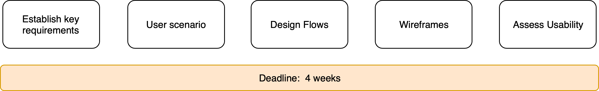
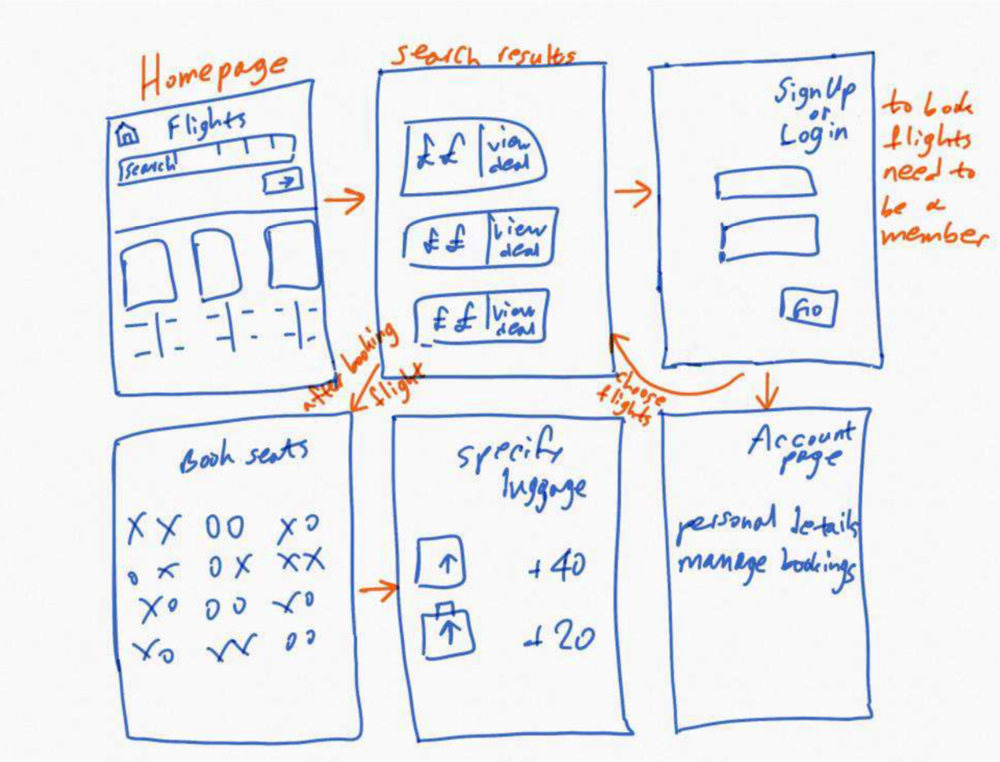
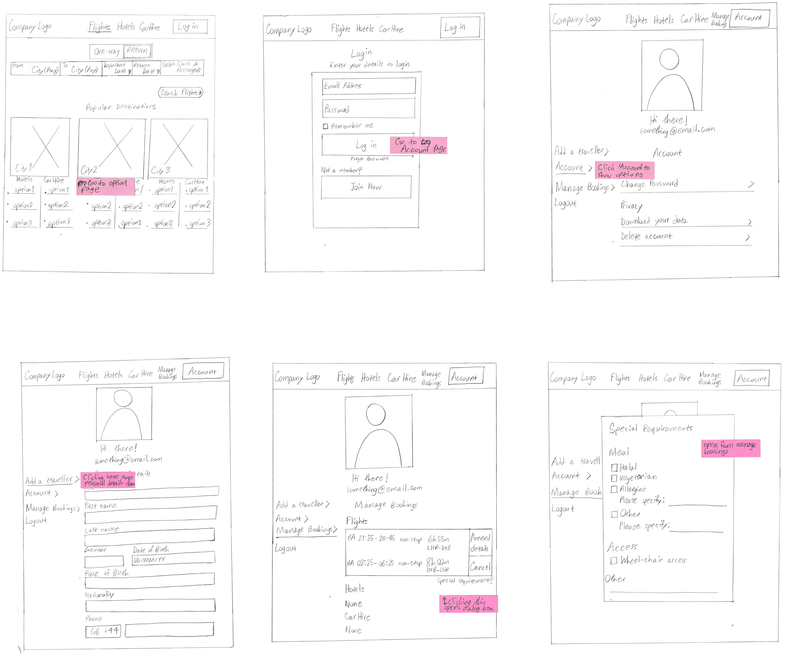
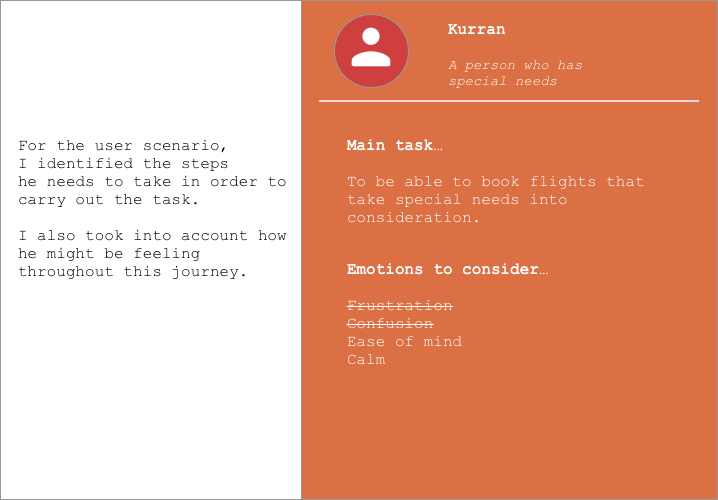
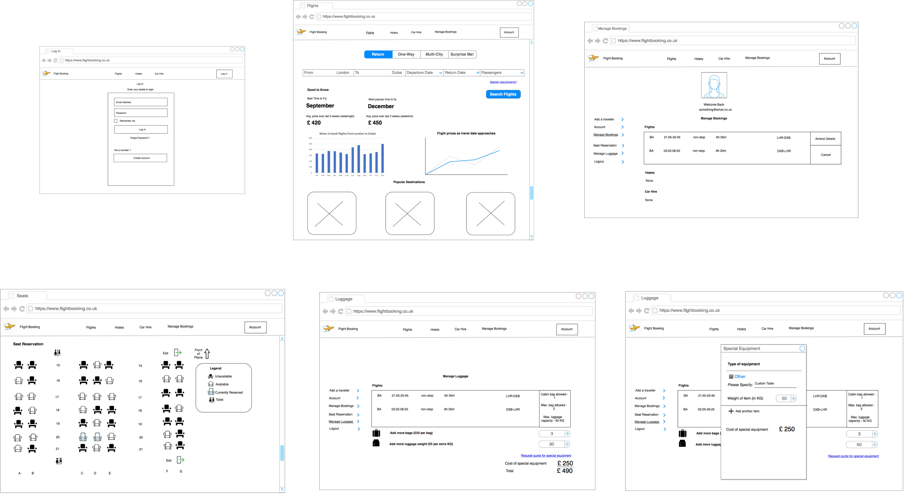
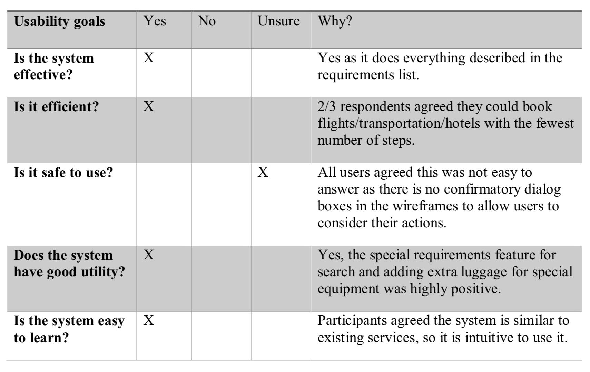

Airplane Booking System
01: Problem and Process
Construct a MVP prototype which allows users to book flights using user-centered approach.
Questionnaires were used to gather the initial requirements to answer questions such as whether more people booked more flights over an app, website, or using other means. There were a total of 22 respondents between the ages of 18-35.
02: Flows
A quick initial sketch was done to help visualise the steps a user must go through in order to book a flight.
Findings from the questionnaire led to an ordinary flight booking site that functioned similar to existing services. For this reason five individuals, between the ages of 19-22, were informally interviewed to see if any new information could be gleaned. Updated sketches were made to ensure the interviewees understood the user journey. This led to adding extra features such as the ability to see the best times to book flights that updates based on contexual information. (This came about since one candidate jokingly said "students should get student discount on flights!")
03: User Scenario
Since I was not sure if I could locate a disabled user who might need special access in time, and the questionnaire results would be anonymous, a less able-bodied user who needed wheel-chair access, was turned into a user scenario.
04: Wireframe
Wireframes were then produced which include the changes and additional features such as the ability to manage luggage which takes into account special items by weight.
03: Usability Evaluation
Semi-structured interviews were conducted to assess final designs. Three of the original five were the candidates. This was done intentionally to see if the updated wireframes matched their expectations. i.e. the participants were already familiar with the system. The outcomes of the usuability goals have been summarised in the table below.
